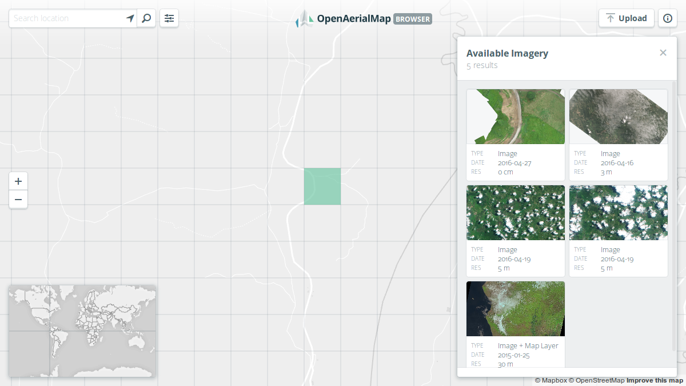

Getting Started
OpenAerialMap Browser
Imagery from satellites, unmanned aerial vehicles (UAVs) and other aircraft are becoming available at ever increasing rates. It is often difficult to determine what is available and easily access it.
The OAM Browser aims to provide a simple way to find and access aerial imagery.
It features an interactive grid that simplifies the process of finding imagery for a particular location, and a set of filters that allow you to refine the search even further.

The images can be freely downloaded and used, and some also have a map layer available which can be used with different programs.
Using the Mosaic Layer
By default, the OAM browser will display a mosaic layer of all available imagery. The mosaic layer is a composite of all available imagery in the catalog. The mosaic layer is a great way to get a quick overview of the imagery available in a given area.
Updating the mosaic layer
The mosaic layer will only render imagery that has been processed and is available in the catalog. When some new imagery is added or deleted from the catalog, it may take a few minutes for the mosaic layer to update.
Visibility conditions
The mosaic layer will be hidden under the following conditions:
- Filters are applied
- Imagery are selected
Source code and development
The oam-browser is completely open source and the code and instructions are available on github under the BSD 3-Clause license.